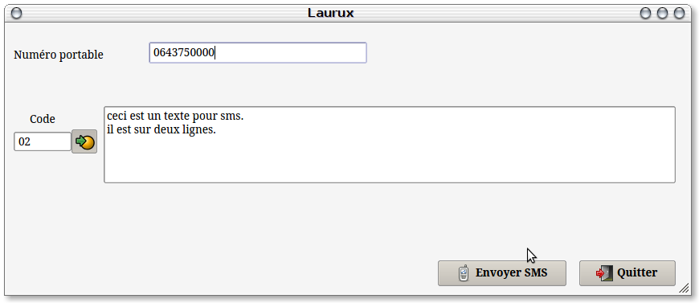
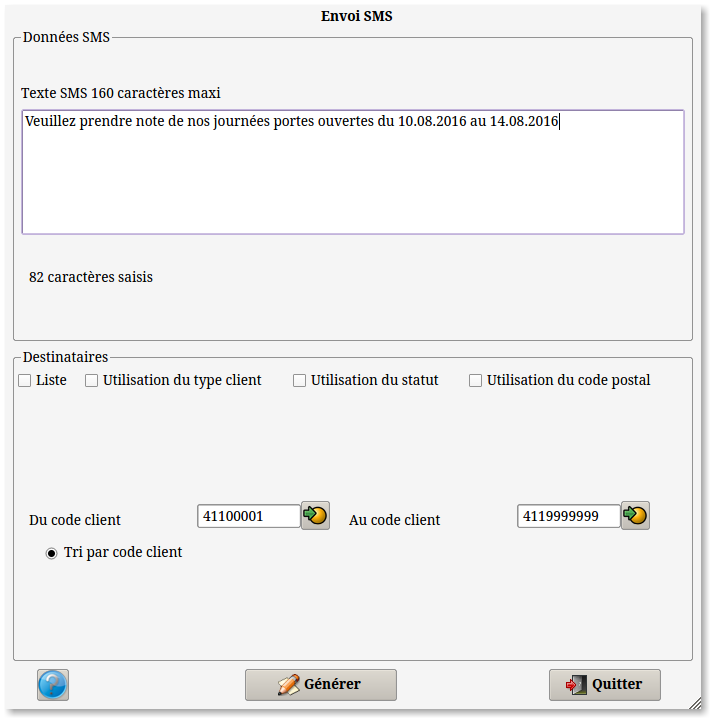

~ Comptabilité et Facturation Laurux ~

~ Comptabilité et Facturation Laurux ~ |
|
|
|
Préambule, installation et
configuration.
Voir la page consacrée aux détails de l'installation Configuration SMS
Utilisation des envois uniques.
Il faudra en
premier aller dans les préférences, onglet réseaux, pour activer la
gestion des SMS.
Ensuite par le menu des
constantes il sera possible de saisir les textes des SMS couramment
utilisés tel que :
-"Votre
commande est prête", ou bien "Votre matériel est à votre disposition" etc...
Ce programme fonctionne de
la même façon que les commentaires. Un code sur 2 caractères et un
texte sans limite de caractères.
Pour l'envoi des SMS, comme annoncé plus haut, vous pouvez passer soit
par les fiches clients ou fournisseurs soit directement par le
programme "Envoi unique" soit par la facturation. Ces programmes
utilisent tous l'envoi unique. Pour les envois multiples voir plus loin
SVP.
Si on passe par les fiches
clients ou fournisseurs le programme utilisera le numéro de portable du
premier index si on est sur cette page sinon il utilisera le portable
du contact sélectionné si on est dans l'onglet "Contact".

Si on passe par les tables
clients ou fournisseurs alors le numéro de portable sera indiqué sinon
il faudra le saisir manuellement.
On pourra sélectionner un
texte mémorisé à l'aide du bouton de recherche ou alors en saisir un.
On cliquera sur le bouton
"Envoyer SMS" pour faire l'envoi.
Utilisation des envois multiples.
On accède aux SMS multiples par le menu "SMS" du menu général.

A l'ouvertue le programme va afficher le nombre de SMS restants
Ce programme
fonctionne de la même façon que l'Emailing. On saisit un texte, on
sélectionne ses destinataires et on génère l'envoi des SMS.
Durant le
traitement le programme contrôle en permanence le solde ses SMS et si
le solde est égal à zéro il affichera une alerte et arrêtera le
traitement.
----------------------------------------------------------------------------------------------------------------------